Nothing particular planned for today, I started my own self-guided cycling tour
with buying a map at a newsstand in front of the train station,so I won’t get lost.
There were many street hawkers selling maps.
The maps for the traditional downtown, the area encircled by the city wall probably only one-fifteenth of the whole Xian city,
were small and about 2 or 3 RMB. The larger maps with the size of a poster were 4 RMB.
As for the breakfast, I had my own water and bought a basket of eight meat buns that should be enough for the whole morning.
The City Wall of Xian which had been repaired a few times through out the time is the most complete city wall that has survived in China.
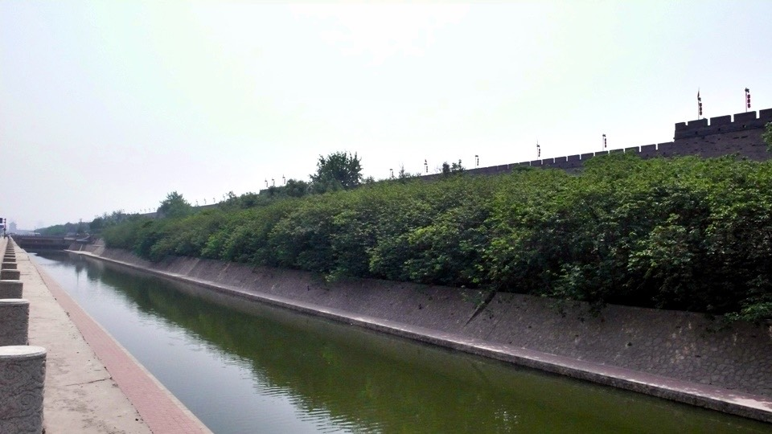
Not only is the wall well-maintained, but the moat surrounding it is preserved.
The land outside of the wall which was fields a few decades ago has been expanded and becomes a bustling and busy metropolis.
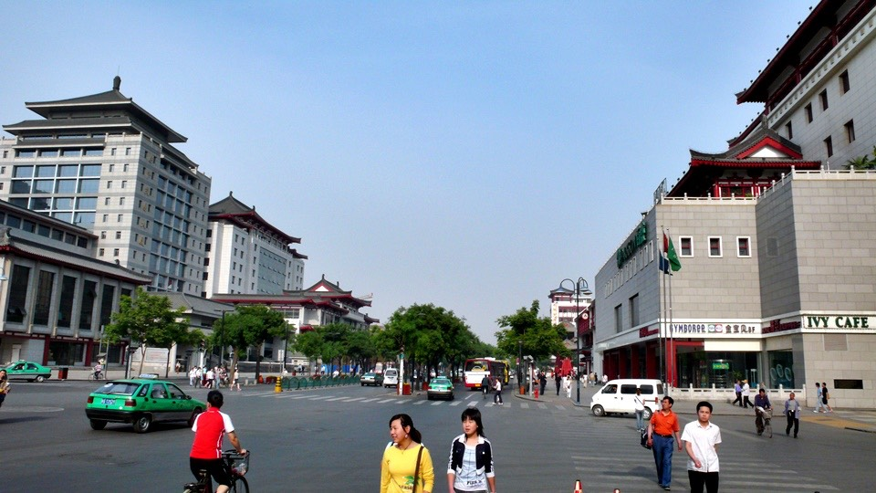
In the morning, I first went to the Bell Tower, the geographical center of the traditional downtown.
I skipped tower climbing as one has to pay entrance fee to enter the tower.
Moreover, I had seen it and did not care whether I climbed it or not
My next stop was the Muslim Quarter (also known as Muslim Street) where the Muslim community lives and works today.
The area is comparable to the concentration of a Chinese shops and Chinese business in a Chinatown.
A Muslim is someone who follows the religion of Islam.
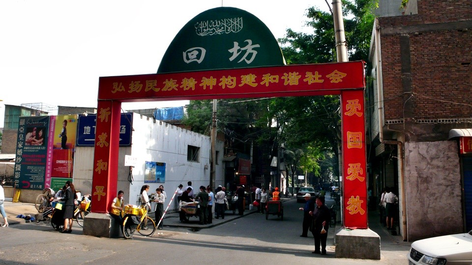
In Muslim Quarter, Muslim men wear white hats and Muslim women are veiled,
you can find various Muslim foods. Please keep this in mind; never mention pork and alcohol in Muslim Quater.
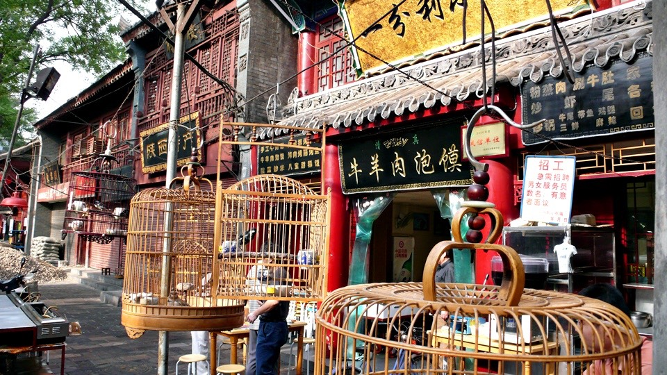
To experience Muslim flavor, I tried a hot green onion pan cake (so-called “green onion box” by locals)
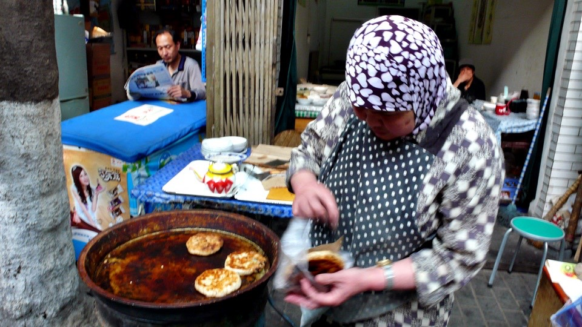
While eating the one-dollar-RMB super hot pan cake, I followed a group of Muslim along a narrow street lined with antique stores,
finding the Great Mosque which was located in an alley where it is hard to maneuver for both cars and bikers.
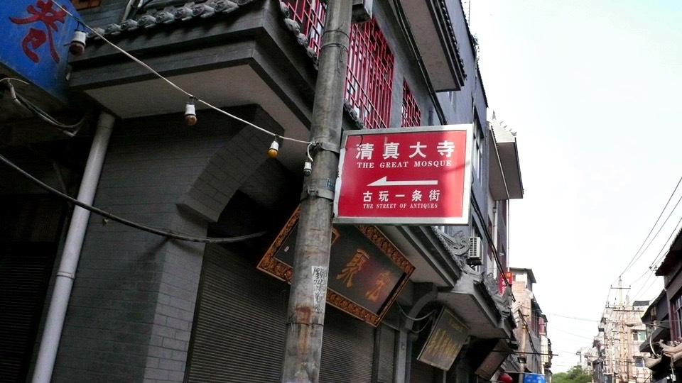
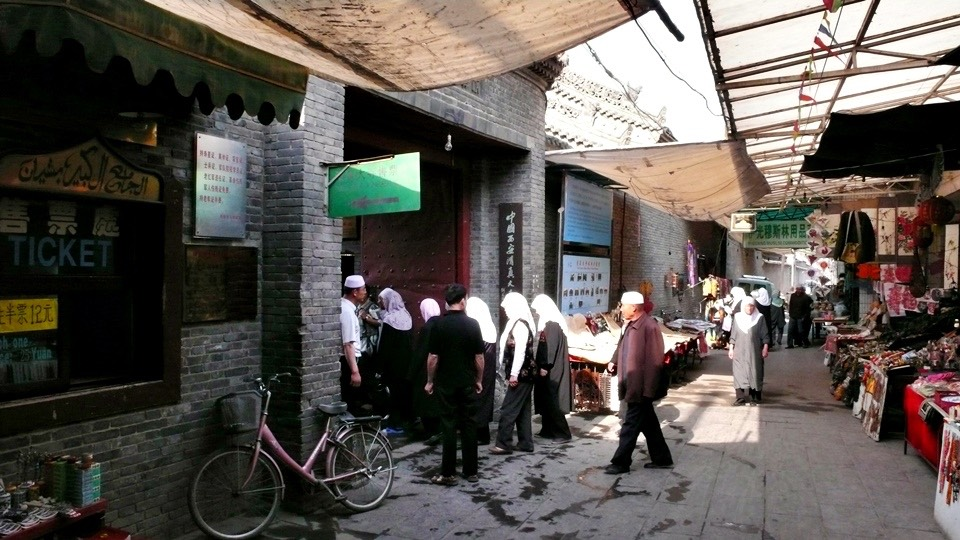
One has to pay the entrance fee for the mosque. I knew nothing about the Islam,
even if I visited the mosque, I won’t understand the culture. Mosque visiting was skipped.
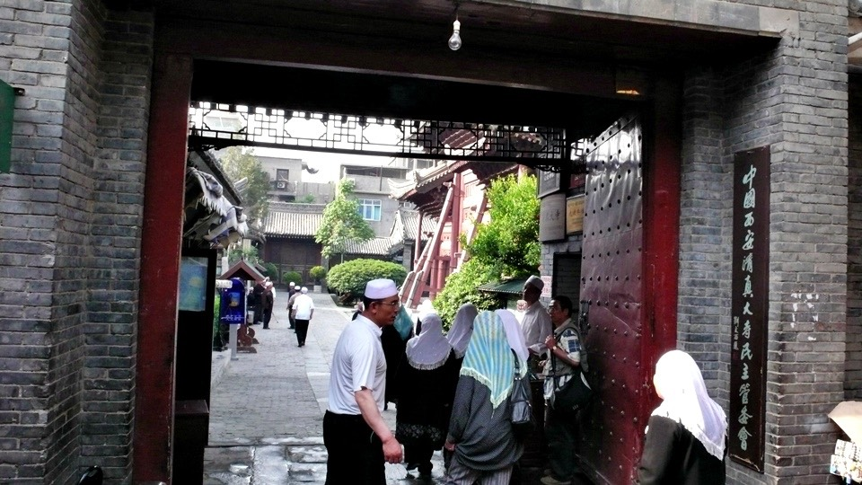
In the heavy-shaded Muslim Quarter, the GPS signal was lost which resulted in tracking errors and random data,
finally the tracking data of the day was abandoned.
I bumped into a movie theater in the city where Spider Man III was playing.
Ticket prices were 35 RMB for adults and 25 RMB for students.
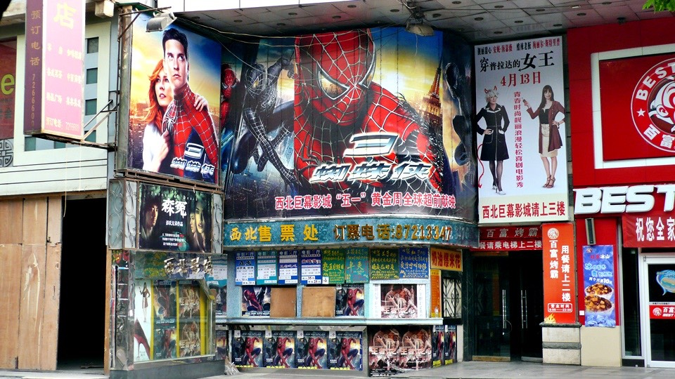
I would miss a lot of summer movies and movie sequels, such as Pirates of Caribbean, Harry Potter, and Shrek.
The movies should be available on DVD by the time I got back to Taiwan,
and I would finish out these great movies in one day like a couch potato.
I had heard that DVD piracy was rampant in China. I was still shocked when I saw it with my own eyes.
The 6-dollar-RMB pirated Spider Man III DVD on display in store window attempted me.
The price was even cheaper than renting. I had the lady owner play the DVD for me.
The quality of the DVD was mediocre, but it was dubbed in Chinese, yikes! I did not buy the DVD, but kept treasure hunting in the store.
Besides the new releases, all other DVDs were four RMB in MPEG-4 format burned into DVD-D9 disc.
What on earth was I talking about?
Let me put it this way, these DVDs could have the entire movie collection of Yun-Fat Chow, or Stephen Chow, or the complete series of X-Files.
They resembled the “complete game book” sold in GuanHua Market in Taiwan years ago, the content changed from games to films or TV series.
I really felt like to buy one as a souvenir, but it seemed stupid to carry a DVD for half a year, I did not pursue it.
The buildings inside the city wall are nice. The Xian Police Department has such a elaborate gateway.
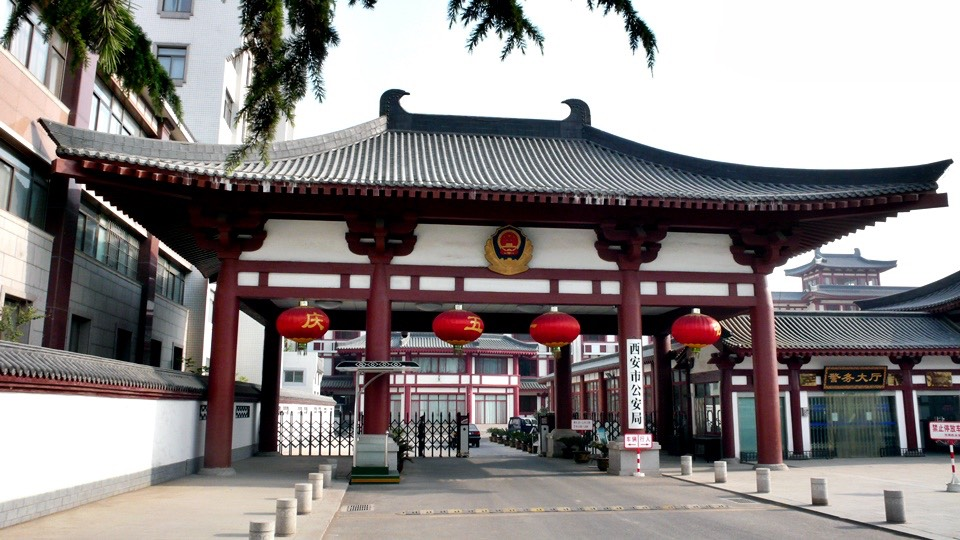
After leaving the traditional downtown, I rode westbound to the starting point of the Silk Road,
my starting point for tomorrow morning as well.
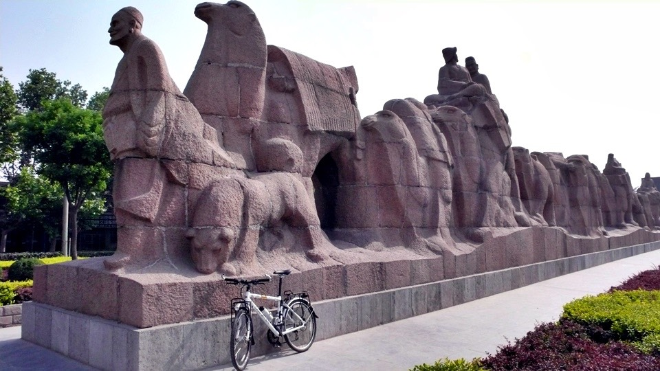
The brown statue at the starting point, probably 50 meters long, was roughly carved out of a rock without details.
I propped Dido against the statue, starting tomorrow, Dido would follow Zhang Qian,
the imperial envoy of Han Dynasty, and the panda beside him (why a panda??) to explore the Silk Road.
And then, I tried hard to read the map for the ruin of Changan,
the map made me feel that the ruin was a nice place surrounded by several small villages.
I got lost for a short period of time, but managed to find the place with no significant entrance.
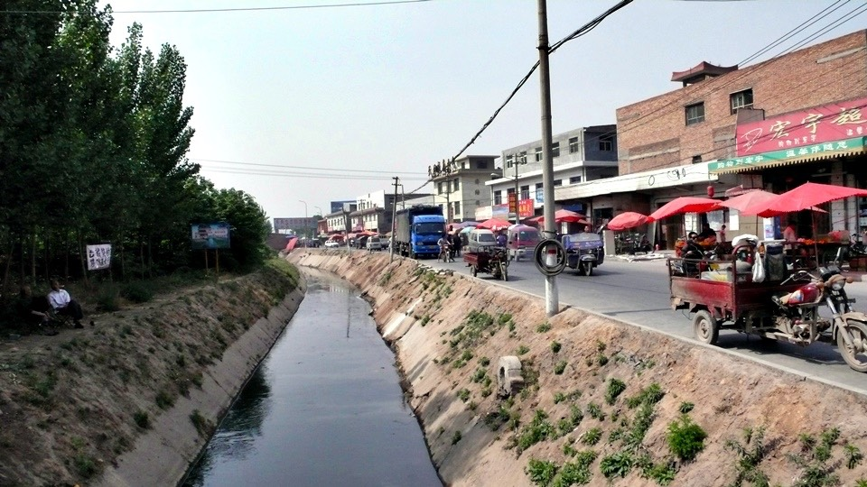
The ruin entrance was like a local market, and the ruin itself made no difference than other villages and streets I had already seen.
As the matter of fact, there was no ruin whatsoever. What a pity! I had gone so far.
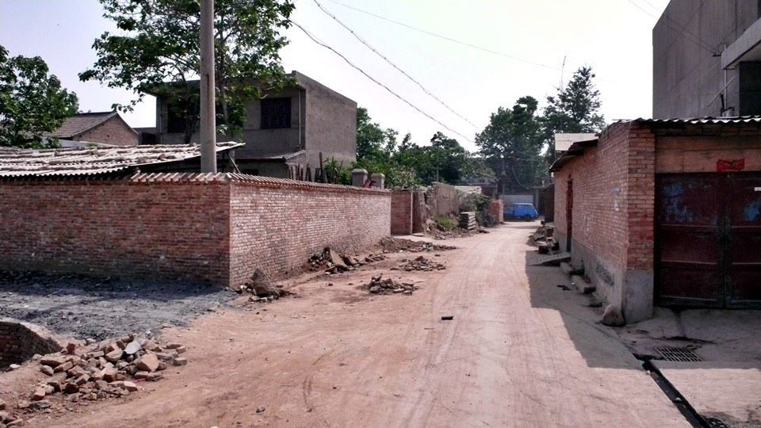
I went back to the Muslim Quarter for a big lunch. On the recommended by friends,
I ordered very tasty sesame butter rice noodle, pan-fry jelly, pan-fry dumpling and ice cold dark plum juice.
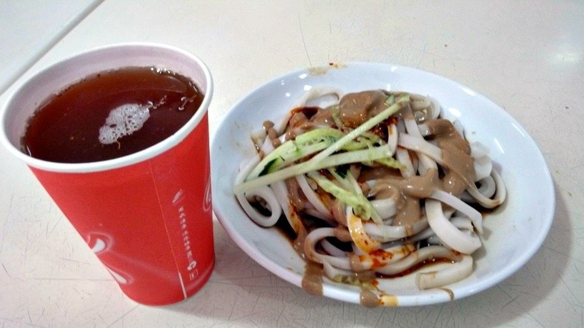
The sesame butter rice noodle was sesame butter, julienned cucumber, and some red sauce (not spicy) over rice noodle.
The cold rice noodle was very Q like Taiwanese cold noodle, they were different though.
(Note: Q in Chinese means chewy in a positive/enjoyable way)
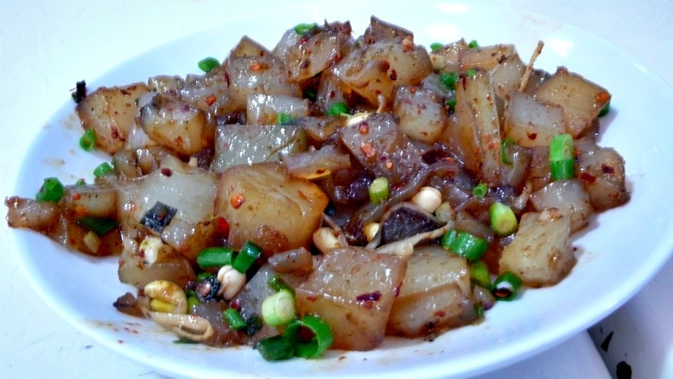
The stir-fry jelly tasted like stir-fry daikon cake,
the jelly was very soft and broke easily if being squeezed harder – highly recommended!
The pan-fry dumplings in Muslin style were different than what we had in Taiwan,
they got very thin crispy skin - quite unique!
The dark plum juice was infused and not from the powder mix.
It would be so nice if my water bottles could be filled with the juice every day.
I might not be able to find such good sour plum juice in Taiwan.
I would miss the food in the Muslim Quarter in Xian very much.
As for the desert, I had rice cakes topped with sweet sauce.
Unlike most deserts, they were pretty new to me and very yummy. Each serving has two flavors for three RMB.
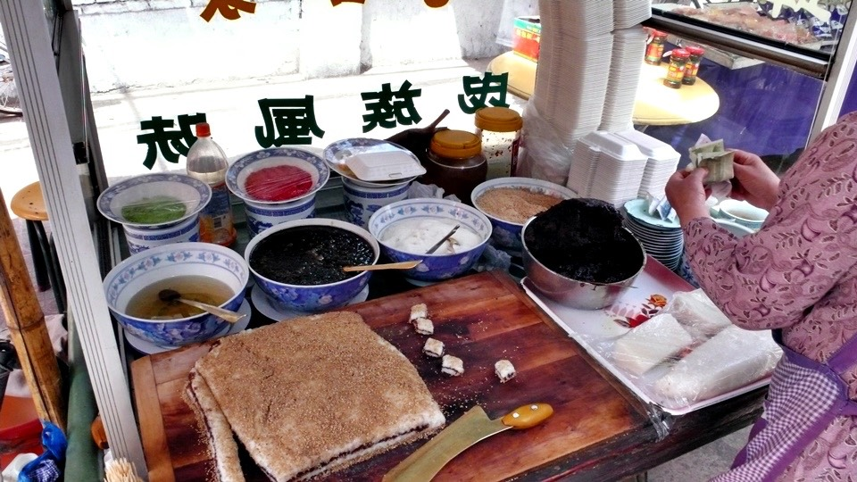
Before leaving the Muslim Quarter, I went to a Muslim bakery, buying various cakes,
such as crystal cakes, as the snacks on the road, eight RMB for one kilo of any kind of cake.
The bakery clerk helped me pick up a little bit of everything.
It felt great to spend fifteen dollars and fifty cents RMB for snacks.
Eating delicious cakes while biking would cheer me up and make my ride no longer a chore.
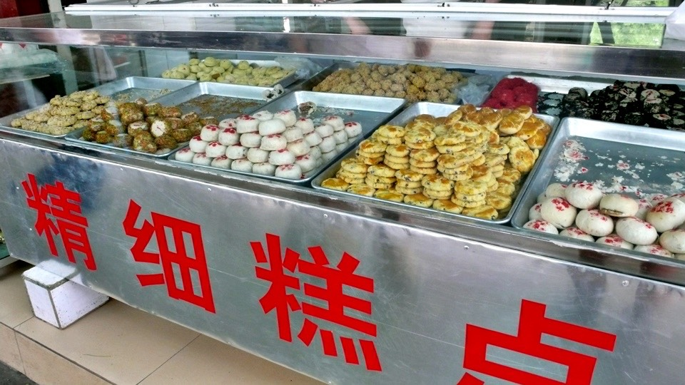
The afternoon sun was annoying; I had been looking for a hat with an adjustable visor over the past two days.
The visor could be pulled down as a shade to cover up the entire face, super effective in blocking afternoon sun.
I saw many bikers wearing them, but did not see them sold on street.
I even went to the wholesale clothing market to look for such a hat, searching in several buildings but not finding one.
It was discouraging, if I could not find it in Xian, it would be more difficult to find it on the road later.
When I got back to hotel, I asked the front desk man where I could find such hat.
What a coincident! Two doors down from the hotel was a hat shop which was closed because the afternoon sun as so scorching hot.
I could get the hat that I had expected for quite sometime when the shop reopened later.
I always kept track of the number of ice pops that I had every day.
In the beginning, I wrote down two, later erased two and wrote down four…
After repeating several times, my notebook became very untidy.
For the sake of clean and easy, I changed the way of tracking it, and Chinese 正system was adopted.
Today I had five ice pops, exactly one 正.
(Note: 正has five strokes, one stroke stands for one ice pop, five ice pops complete the character)
Even though today was my reset day, I rode about sixty KM in and out the city,
not really had a rest. However, my knee did not hurt anymore.
I was not sick and had no diarrhea since I had arrived in China.
My warm up had been finished. After two rest days,
tomorrow was the beginning of the real challenge (looking forward to it)